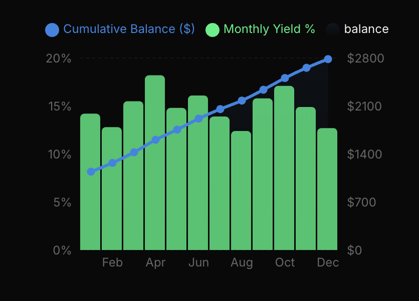

AI Bot Delivering 178.4% Yields While Banks Pay 0.01% — Here’s How Everyday People Are Cashing In

GENEVA — While traditional banking institutions continue to report record-breaking quarterly profits, the average saver is being left behind. With inflation outpacing standard savings account yields, millions of retail investors are effectively "donating" their purchasing power to the very banks that manage their money.
However, a quiet revolution is taking place in the world of decentralized algorithmic trading. AURUM AI, a sophisticated asset orchestration platform, has just released its 2025 performance data, and the numbers are sending shockwaves through the legacy financial sector.
According to the latest audited reports, AURUM’s ecosystem has achieved a staggering 178.4% Net Yield for 2025, averaging 14.87% monthly returns.
This isn't just a "bot" for the tech-savvy; it’s a global movement. Over 118,000 partners have already migrated their assets into the AURUM system, which now orchestrates more than $115 Million in capital across worldwide markets.
2025 Institutional Performance Stats
The "Savings Trap" vs. The AI Advantage
For decades, the path to wealth was simple: work hard, save money, and let the bank give you a "safe" 2% or 3%. But in today's economy, those days are over. When you deposit money in a legacy bank, they don't leave it in a vault. They use high-frequency trading algorithms, institutional-grade bots, and complex market leverage to generate massive returns.
They keep 99.9% of those returns. They give you the crumbs.
"It’s the greatest wealth transfer in history, and it’s happening in plain sight," says one anonymous fintech analyst. "The banks are using billion-dollar AI systems to grow their wealth. AURUM is finally giving that same high-octane AI power back to the individual. It's not just a tool; it's a democratization of the most profitable sector of finance."
The Legacy Bank "Shell Game": Why Your Money is Losing Value
To understand why AURUM is necessary, one must understand the hidden mechanics of the modern bank. When you "lend" your money to a bank (which is what a deposit is), that bank uses a practice called fractional reserve banking. They take your $1,000 and lend it out ten times over, or worse, they feed it into their own proprietary trading desks.
While they charge 18% on credit cards and generate triple-digit returns on algorithmic arbitrage, they offer you a "Performance Savings" rate of maybe 0.5%. If inflation is at 3%, you are losing 2.5% of your wealth every single year you keep your money in a traditional account.
You are effectively paying the bank to use your money to make themselves richer. AURUM flips this script by removing the middleman—the legacy institution—and letting the AI work directly for you.
Yield Migration: Global Performance Chart

Fig A: AURUM AI vs. S&P 500 vs. Traditional Savings – 2025 YTD
Top Detail: Comparison between AURUM AI, the S&P 500, and traditional savings Year-To-Date (2025).
Deep Dive: Inside the AURUM Intelligence Engines
AURUM’s success isn't built on luck, "moon-shots," or market speculation. It’s built on the backs of two proprietary engines that operate with a level of precision that human traders simply cannot match.
1. The Zeus AI Bot: The Trend Architect
The Zeus AI Bot is the flagship of the AURUM fleet. It doesn't just "predict" the market; it analyzes it. Using a complex web of neural networks, Zeus monitors over 2,500 global market signals simultaneously. It looks for "confluence"—the rare moments when multiple indicators align to signal a high-probability trend. By executing trades with millisecond precision, Zeus captures the meat of market moves while minimizing exposure to the "noise" that wipes out most retail traders.
2. The EX-AI Delta Bot: The Volatility Reaper
While most traders fear market volatility, the EX-AI Delta Bot craves it. Designed specifically for the crypto and forex markets, the Delta Bot uses a proprietary multi-strategy oscillator. It thrives in "sideways" or "choppy" markets where human emotion often leads to panic-selling. The Delta Bot identifies micro-reversals and arbitrage opportunities across multiple exchanges, ensuring that even when the market isn't "mooning," your yield continues to stack.
100% Liquidity: The End of the "Locked Capital" Era
One of the most significant breakthroughs of the AURUM system is the move toward total liquidity. Traditional high-yield investments often come with "golden handcuffs"—lock-up periods of 12, 24, or even 48 months where your capital is inaccessible.
AURUM operates on a 100% Liquid model. Because the AI orchestrates trades in real-time on public markets, your profits are your own. Partners have access to 24/7 Payouts, meaning the "bottleneck" of the standard banking workweek is completely eliminated. If you need your funds at 3:00 AM on a Sunday, you have them. This level of financial freedom was previously reserved for hedge fund managers and high-net-worth individuals.
Solving the "Barrier to Entry": No KYC, Low Subscription
Historically, systems this sophisticated were gated behind "Accredited Investor" requirements, requiring a net worth of $1M+ and invasive "Know Your Customer" (KYC) documentation that took weeks to verify.
AURUM has dismantled these gates. To ensure maximum accessibility and privacy, the system requires No KYC to Start. This allows partners from all over the world—including regions underbanked by the legacy system—to participate immediately.
Furthermore, while institutional software often costs thousands in monthly licensing fees, a full subscription to the AURUM AI suite is priced at just $19.99 per year. This isn't a typo; it’s a strategic choice by the founders to prioritize network growth and partner success over short-term subscription profits.
Real Voices: Testimonials from the Field
Democratize Your Future Today
Join 118,000+ partners in the Great Yield Migration — Free to Start
Claim Your Invite Now✓ 100% Liquid Profits | ✓ No KYC Required | ✓ 24/7 Global Payouts